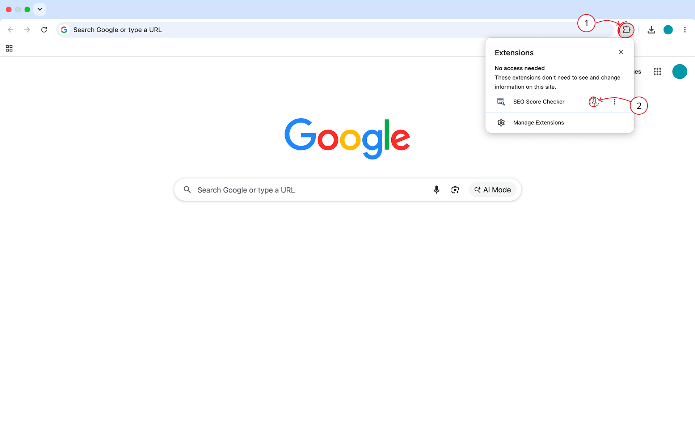
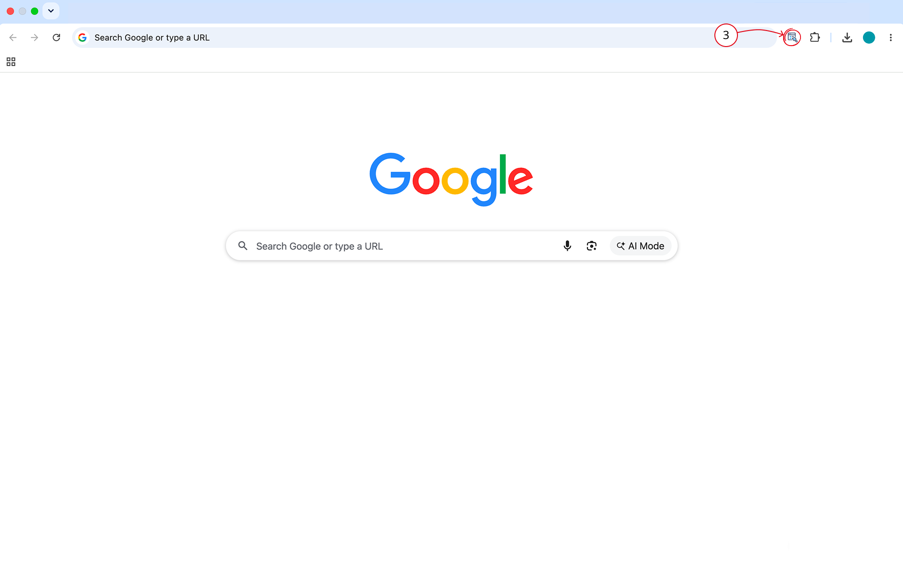

SEO Score Checker Installed
Click the puzzle piece (1) in the top right of your browser.
Then, click the little pin (2) next to SEO Score Checker:
Then, click the little pin (2) next to SEO Score Checker:

Open the extension (3) to check the SEO score for the current page:
